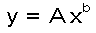

Numbers 11 through 100 pay nothing
Numbers 10 through 100 pay nothing
The interactive tutorial on risk calculated the expected values of some games and securities. It made a connection between the expected value of a security and its market price. This use of the expected value is based on the Law of Large Numbers, which is a statement about what happens when a game is repeated over and over and over again. If a game can be repeated many times, good luck and bad luck tend to wash out.
What happens, though, if the game isn't going to be repeated over and over? What if it's only played once, or a few times, in your life? What if the stakes are very high, so that you are gambling with something that you really do not want to lose? That's when risk aversion comes in.
Risk averse means being willing to pay money to avoid playing a risky game, even when the expected value of the game is in your favor.
Let's find out how risk averse you are. If you are a student, I'm guessing that $10,000 is a lot of money for you. A gift of $10,000 would make your life noticeably easier. Losing $10,000 would make your life noticeably harder. If you're a well-paid executive or professor (Ha! Ha!), multiply my dollar numbers by ten, or a hundred.
Imagine that you're a contestant on a TV game show. You have just won
$10,000. The host offers you a choice: You can quit now and keep the $10,000,
or you can play again. If you play again, there is a 0.5 probability that
you will win again, and wind up with $20,000. If you play again and lose,
you lose your $10,000 and take home nothing. You quickly calculate that
the expected value of playing again is $10,000, the same as sticking with
the $10,000 you have won so far. Which do you chose?
Keep the $10,000. Don't take the 50-50 chance to get $20,000.
Play again, with an 0.5 chance of getting $20,000, and an 0.5 chance of going back to $0.
I could go either way. They are worth the same to me.
Did your answer to the question above show risk aversion? If it did, let's try to measure how risk averse you are. We can do this by changin the game in one of two ways:
For example, would raising the payoff to $22,000 for winning the second
time enough to get you to take the risk and play? Which would you choose?"
Stop with $10,000.
Play again, with an 0.5 chance of getting $22,000, and an 0.5 chance of going back to $0.
Let's take the next step: How high would the payoff on the second game have to be to entice you to take the risk, rather than keep the sure $10,000?
You would risk losing $10000 in return for a 50-50 chance of finishing with
$.
The higher your answer was to that question, the more risk averse you are.
In my comment on your answer above, I snuck in the Von Neumann-Morgenstern theory of risk aversion. I wrote that the amount you typed in "is worth twice as much to you as $10000." What could that mean?
Conventional economic theory imagines that each of us is always maximizing our "utility." Utility is like a meter in your head. The meter goes up when you acquire more stuff that you want. Economists imagine that utility is a quantity that has units, so it makes sense to say that alternative A has twice as much utility as alternative B. John Von Neumann and Oskar Morgenstern, co-authors of the pioneering The Theory of Games and Economic Behavior in 1944, developed the idea of risk aversion. They explained it by saying that money (income) has a declining marginal utility. Money, in other words, obeys the Law of Diminishing Returns: The more you have, the less utility you gain from getting a set amount more.
In this case, their theory would say that getting $10,000 from winning the first time brought you a certain amount of utility. Let's say it's 1 unit of utility. Winning $10,000 more dollars on top of that would not add 1 more utility unit to your utility. Instead, it would add X utility units, X being less than 1.
X is bigger than 0. The second $10,000 is worth something to you, but it is worth less than your first $10,000. This is an application of what economists' call the Law of Diminishing Returns.
If the second $10,000 is worth less than the first $10,000, risk averse behavior can be explained as "rational."
"Rational" is more economics jargon. It means being motivated solely by maximizing one's utility.The utility for you of the $20,000 that you might win is not twice as much as the value of your first $10,000. The value of $20,000 is 1 + X, which is less than 2. The expected value of a 0.5 chance of winning $20,000 becomes (1 + X)/2 utility units, which is less than 1. Thinking in terms of utility, rather than dollars, the expected value of playing again is less than value of keeping your $10,000.
Suppose a $30,000 payoff in the second game would be just enough to make you undecided between playing again versus taking the sure $10,000. Von Neumann and Morgenstern would say that, for you, it takes an additional $20,000 to add as much to your utility as the first $10,000 did. In other words, if $10,000 is worth 1 "util" (short for the maginary utility unit) to you, then $30,000 must be worth 2 utils. That way, both standing pat and playing again have the same expected value, 1 util.
Let me illustrate the idea of diminishing marginal utility of money with a graph.
For the graph, I arbitrarily assign a utility value of 0 to having no income. I assign a utility value of 1 to $10,000. When you click a button to a dollar amount that would tempt you to play again, I give that amount the utility value of 2. The Von Neumann-Morgenstern theory that if you are indifferent between a a 100% chance of a $10,000 prize and 50% chance of getting a certain bigger prize, then the utility of the bigger prize must be twice the utility of $10,000.
That gives me three points, ($0, 0), ($10000, 1), and ($X, 2), which I plot on the graph with black dots. Then I draw the red curve, through the points, to try to represent the utility to you of all amounts of money from $0 to the bigger prize you picked.
The red curve has this formula: Here, X is income, Y is utility, and A is a scaling constant determined by my assignment of a utility of 1 to a $10,000 income amount. b is the elasticity of utility with respect to changes in income. (We'll explain what this means shortly.) This power function form is arbitrary, but it's as good as any.
The slope of this curve at any point represents the marginal utility of income. In other words, the slope represents the addition to utility that results from an additional dollar of income at that point. If the curve is concave down (bends down), you have a declining marginal utility of income.
(The pictures say "Applet" because they are screen shots from the Java applet that used to be here.)
Click the button below the graph for what would tempt you to risk your $10,000 in return for a ½ chance of winning that amount.
Note: If, for example, you click $40000, the graph says, "Getting 1% more income raises your utility by only 0.5%." This is the elasticity idea. The elasticity is how many percentage points one thing changes when something that affects it changes by 1%.
In the power function, , b is the elasticity of Y with respect to X. When X changes by 1%, Y changes by b%. For risk averse people, b is less than 1, so utility is relatively inelastic with respect to changes in income.
On this graph, the slope changes as you go from left to right, but the elasticity is the same everywhere, thanks to our using the power function.
To summarize, Von Neumann and Morgenstern recast your choice from being about different amounts of dollars to being about different amounts of utility. This lets them preserve the principle that one should always choose the alternative with the highest expected value. The down side is that they have to bring in an imaginary quantity, "utility," that is impossible to observe directly.
Maurice Allais, an economics Nobel winner, pointed out that people don't always behave as the Von Neumann-Morgenstern theory says. Here's a version of one of his examples:
Imagine that you may spin one of two Wheels of Fortune, A and B. Each
has 100 numbers on it. For each wheel, the probability that any particular
number will come up on any one one spin is 1/100. You only get to play
this game once. The wheels pay off like this:
| Wheel A | Wheel B |
|
|
|
| Numbers 1 through 10 pay $1 million
Numbers 11 through 100 pay nothing |
Numbers 1 through 9 pay $5 million
Numbers 10 through 100 pay nothing |
Now consider this game, which you would also get to play only once:
| Wheel C | Wheel D |
 |
 |
| Numbers 1 through 100 pay $1 million.
You are sure to win $1 million. |
Numbers 1 through 9 pay $5 million.
10 pays nothing. 11 through 100 pay $1 million. |
⇑
⇑
⇑
⇑
⇑
⇑
⇑
⇑
⇑
⇑
⇑
⇑
⇑
⇑
⇑
⇑
⇑
⇑
The Von Neumann-Morgenstern theory implies that you'd choose the first wheel both times or the second wheel both times.
Wheel C is what you would get if you started with Wheel A and added 90 chances to win $1 million.
Wheel D is what you would get if you started with Wheel B and added 90 chances to win $1 million.
Standard theory says that if you like a certain something, call it A, better than something else, call it B, then you will like A + X better than B + X, regardless of what X is, as long as it's the same X added for both.
Allais observed that this doesn't always work with risk, because people have a different attitude toward small risks. Wheel D has a very small risk that you will get nothing, but many people will choose D anyway, even after choosing A for the first game.
Think of the small risks you take, like crossing streets when you're walking near campus. Allais doesn't dispute the idea of risk aversion. He just questions whether people are as "rational" about the risks they face as the Von Neumann-Morgenstern theory assumes. Allais's ideas have relevance to the analysis of the politics of health and safety regulation.
The theory of risk aversion was developed largely to explain why people buy insurance.
Buying insurance is hard to justify using the theory of expected value. That's because buying insurance is a gamble with a negative expected value, in dollar terms.
Regular indemnity insurance specifies that you get money if certain things happen. If those things don't happen, you don't get any money. So far, that's just like playing roulette.
In return for the chance to get some money, you bet some money by paying the insurance company a "premium." The insurance company keeps your premium if you don't have a claim. So far, that's still just like playing roulette.
Over the large number of people who sign up for insurance, the insurance company pays out less money in claims than it takes in. If it doesn't, it can't stay in business. Your expected payoff is therefore less than your premium, unless you can fool (or legally force) the insurance company into selling you a policy with odds are in your favor. Buying insurance has a negative expected value. Still just like playing roulette.
Except that insurance is worse than roulette. Roulette's expected value is about -5% of the amount bet. The expected value of a private health insurance policy is about -15%, relative to the amount bet, the insurance premium paid. This is what Obamacare requires for large health insurance plans, like Blue Cross. It's what the insurers mean when they say that their "medical loss ratio" is 85%.
Before Obamacare, some insurers sold policies to individuals or small groups with medical loss ratios of 60% or less. These policies' expected values were -40% of the amount bet, or worse.
We have this, therefore:
| Type of Gamble | Expected value, relative to amount bet |
| Health insurance | You lose 15% of each bet, on average. |
| Roulette | You lose 5% of each bet, on average. |
We conclude that roulette is much better deal than health insurance.
Right?
Right.
Wrong! It's smart to buy insurance.
Let's go through a numerical example.
Suppose you face a 1/100 chance of losing $10,000. If you are risk averse, you will pay more than $100 (the expected or "actuarially fair" value) for an insurance policy that would reimburse you for that $10,000 loss, if it happens.
Suppose there are many people like you, and you'd each be willing to pay $110 to avoid that risk of losing $10,000. You all could join together to form a mutual insurance company, collect $110 from each member, pay $10,000 to anyone who is unlucky and loses, and come out ahead, probably. The more participants in your mutual insurance company, the more likely it is that you'll have money left over for administrative costs and profit. That's how insurance companies with "Mutual" in their name got started.
How can an insurance company assume all these risks? Isn't it risk averse, too?
The insurance company can do what an individual can't: Play the game many times and get the benefit of the Law of Large Numbers. The larger an insurance company is, the better it can do this.
You may also pay fee to join this. That would cover paperwork cost. We will not include that in the risk pool money.
This arrangement helps you reduce your risk. You can only lose $10,000 if all five members of the group get unlucky and lose the $10,000. The probability of that is .01 times .01 times .01 times .01 times .01, which equals .0000000001, or one chance in ten billion.
The tradeoff is that you now have a bigger chance that you will lose a smaller amount of money. The table below shows the probabilities that you face, as a member of the risk pool. (The probabilities in the 4th column are calculated using the binomial distribution. The assumption is that bad events are independent of each other.)
| Claims
How many people in the pool
get unlucky and lose $10,000 |
Total claim cost to the pool
$10,000 times the number of claims |
Cost per pool member
Total cost divided by 5, the number of pool members |
Probability
of this much cost |
Running total probabilty
The probability of this much cost or less |
| 0 | $0 | $0 | 0.9509900499 | 0.9509900499 |
| 1 | $10,000 | $2,000 | 0.0480298005 | 0.9990198504 |
| 2 | $20,000 | $4,000 | 0.0009702990 | 0.9999901494 |
| 3 | $30,000 | $6,000 | 0.0000098010 | 0.9999999504 |
| 4 | $40,000 | $8,000 | 0.0000000495 | 0.9999999999 |
| 5 | $50,000 | $10,000 | 0.0000000001 | 1.0000000000 |
The row for 1 claim tells us that there is about a 5% chance that you will lose $2,000. The cell on the right end of that row says that the chance of losing $2000 or less is 0.9990198504. Subtract that from 1, and we get that the probability of losing $4,000 or more is 0.0009801496. This is about one chance in a thousand. From the row for 3 claims, we can similarly calculate that the chance of losing $6,000 or more is about 1 in 100,000.
This risk pool of five is better than being on your own, but you can do even better if you can get more people to join.
Expand the pool to 100 members, and the probability that you will lose as much as $2,000 drops to 0.000000000000000000024. That's small! There is less than 1 chance in 10,000 that you will lose $700 or more.
| Claims | Total Cost
to Group |
Cost per member
(100 members) |
Probability | Running total
of probabilities |
| 0 | $0 | $0 | 0.366032 | 0.366032 |
| 1 | $10,000 | $100 | 0.369730 | 0.735762 |
| 2 | $20,000 | $200 | 0.184865 | 0.920627 |
| 3 | $30,000 | $300 | 0.060999 | 0.981626 |
| 4 | $40,000 | $400 | 0.014942 | 0.996568 |
| 5 | $50,000 | $500 | 0.002898 | 0.999465 |
| 6 | $60,000 | $600 | 0.000463 | 0.999929 |
The bigger the pool, the smaller your risk of losing a large amount of money. At the same time, the bigger the pool, the more likely it is that you'll have to come up with a small amount of money, because somebody in the pool will be unlucky and you'll have to pay your share.
On top of your share of other pool members' losses, you'll also have to pay your share of the cost of operating the pool. If the pool is a profit-making business, you'll also have to pay your share of profit sufficient to attract entrepreneurs to the insurance business. Those administrative costs and profits are not included in the tables above.
Most insurance companies do not require you to pay more money if they have unusual losses (other than by raising the premium for the following year, which you can decline to pay if another insurance company can offer you a better deal). Instead, the company takes the risk. The advantage of size, though, is similar. The bigger a company is, the less "reserves" of money it needs, relative to the value of its business, to have any specified probability of being able to pay all its claims from those reserves.
Mutual funds are risk pools, too. For an individual, buying "junk bonds" -- bonds with a high yield but a significant risk of not paying off -- is risky. Mutual funds spread the risk, by holding junk bonds, or risky stocks, of a wide variety of companies. By buying shares in a mutual fund, you get, in effect, small holdings in many companies. Unless there is some general market collapse, you are safe from financial disaster. Risky companies benefit, too. They can sell their stocks and bonds to mutual funds without having to pay as much extra to compensate for the risk as they would if selling to risk averse individuals.
The risk of illness and death is part of the nature of life. However, the risks of financial loss, or of needing medical care that one cannot finance oneself, these risks are socially determined.
We can and do buy health insurance for which our expected loss is 10% of what we pay. If the cost of operating the insurance system could be reduced to 5% of premiums or less, we could afford to buy more insurance, and get more peace of mind. Or we could just pocket the difference in cost. Cost and profit shares below about 10% are hard to achieve in private insurance companies, because private insurance must be sold and premiums collected. This requires a sales force, office staff, and equipment.
In the U.S., Medicare, which serves the elderly nearly universally, has administrative costs below 5% of what it pays out. Medicare piggy-backs on the Internal Revenue Service's tax collection operation for collecting its premiums. No one has to be sold on Medicare, and Medicare doesn't need its own premium-collecting system. That saves money.
Other countries' national health insurance or national health services save even more through the financing simplification that universal coverage makes possible. In Canada, hospitals do not have to generate bills, and the government insurance does not have to process them, nor do individuals have to deal with the paperwork. (The main exceptions are vistors from the U.S.) Instead, hospitals are paid by global operating and capital budgets, essentially a lump sum each year.
This makes a public system more efficient. The "house" can take a smaller percentrage. People can cover more risks for less cost. That's part of why Canada's system, which covers everybody there, costs less than the U.S. system. Competition among private firms can reduce some costs, but not the costs of competition itself. Our private market can't get to that level of efficiency by itself. It'll take legislative action.
Thanks for participating!